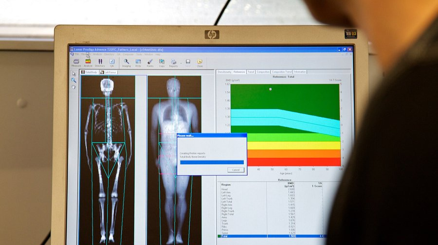

قياس كثافة العظام
يُرسل الجهاز أشعة سينية بـطاقتين مختلفتين: low keV وhigh keV.
العظم والأنسجة الرخوة يمتصّان الطاقتين بنِسب مختلفة.
بمقارنة القياسين يحذف الحاسوب جزء الأنسجة الرخوة، فيبقى العظم وحده.
النتيجة رقم: كثافة العظم BMD بوحدة g/cm²، ثم تُحوَّل إلى T-score وZ-score. الجرعة قليلة جداً.
